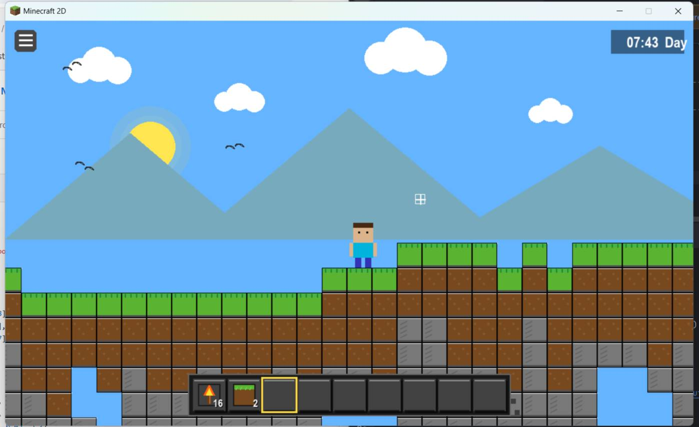
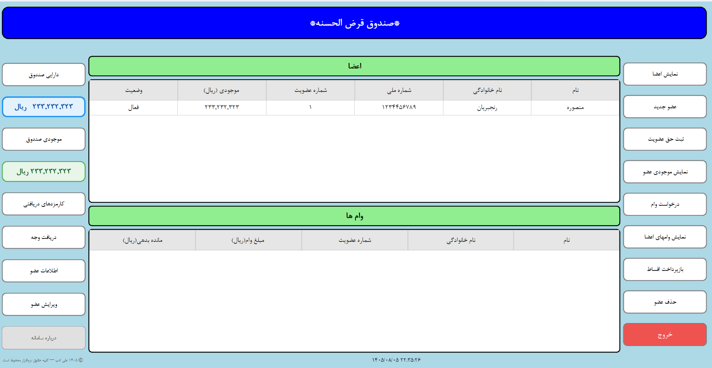

Pythonپیادهسازی بازی ماینکرفت دسکتاپ
در این پروژه، کارآموز آموختههای خود در برنامهنویسی Python را در قالب یک بازی دسکتاپ به کار گرفت. این تجربه فرصتی برای تمرین کدنویسی، حل مسئله، رفع خطا و تبدیل ایده به یک پروژه عملی بود.
من یک مهندس کامپیوتر و منتور برنامهنویسی Python هستم. به جای حفظ کردن کدها، به کارآموز کمک میکنم فکر کردن، حل مسئله و ساخت پروژه واقعی را یاد بگیرد.
هدف من این است که کارآموز از مرحله «نمیدانم از کجا شروع کنم» به مرحلهای برسد که بتواند یک پروژه واقعی را خودش تحلیل، طراحی و پیادهسازی کند.
مسیر یادگیری برنامهنویسی برای خیلی از افراد با آموزشهای پراکنده، دورههای زیاد و کدنویسی بدون هدف همراه میشود.
در منتورینگ من، تمرکز روی حل مسئله و ساخت پروژه است. یعنی هر چیزی که یاد میگیریم تا حد امکان در یک پروژه واقعی استفاده میشود.
«هدف فقط نوشتن کد نیست؛ هدف این است که بتوانی بفهمی چه چیزی باید بسازی و چرا.»
یک مسیر مرحلهبهمرحله برای تبدیل دانش تئوری به توانایی ساخت پروژه
ابتدا یاد میگیریم مسئله را درست بفهمیم و قبل از کدنویسی برای آن راهحل طراحی کنیم.
پروژه را به قسمتهای کوچکتر تقسیم میکنیم تا مسیر پیادهسازی مشخص باشد.
کارآموز خودش کدنویسی میکند و من در مسیر تحلیل، رفع خطا و تصمیمگیری کنارش هستم.
در نهایت پروژهای داریم که میتوان آن را در GitHub و رزومه قرار داد.
این بخش برای نمایش پروژهها، ویدئوها و پیشرفت کارآموزانی است که در مسیر منتورینگ با من کار کردهاند.

Pythonدر این پروژه، کارآموز آموختههای خود در برنامهنویسی Python را در قالب یک بازی دسکتاپ به کار گرفت. این تجربه فرصتی برای تمرین کدنویسی، حل مسئله، رفع خطا و تبدیل ایده به یک پروژه عملی بود.

Pythonطراحی و پیادهسازی یک نرمافزار دسکتاپ برای مدیریت صندوق با Python و PySide6؛ تجربهای عملی در تبدیل نیاز واقعی به یک برنامه کاربردی.
بخشی از تجربه حرفهای من در طراحی، توسعه و پشتیبانی نرمافزارهای تحت وب و سامانههای سازمانی.
طراحی و توسعه بکاند سامانه با استفاده از Python و Django و پشتیبانی و توسعه مستمر آن به مدت بیش از ۴ سال. این پروژه در سال ۱۴۰۴ موفق به اخذ گواهی دانشبنیان شد و با استفاده از Docker و CI/CD بر روی سرور مستقر و نگهداری میشود.
طراحی و توسعه یک سامانه CRM سازمانی که بیش از ۵ سال توسط کارکنان دانشگاه مورد استفاده قرار گرفت. این سامانه با استفاده از PHP و Symfony 2 توسعه یافته و از MongoDB، Neo4j و MySQL برای مدیریت و ذخیرهسازی دادهها استفاده میکرد.
بیش از ۱۰ سال تجربه در طراحی، توسعه و پشتیبانی نرمافزارهای تحت وب و سامانههای سازمانی، با تجربه کار با فناوریها و معماریهای مختلف.
توسعه، استقرار، پشتیبانی و کارکرد واقعی یک نرمافزار در طول سالها، بخشی از تجربهای است که در پروژههای حرفهای به دست آوردهام.
میتوانیم مسیر یادگیری را متناسب با سطح و هدف خودت طراحی کنیم.